Университет ИТМО
Факультет программной инженерии и компьютерной техники
Отчёт по групповому проекту
по курсу «Разработка мобильных приложений»
HighLoad Invest Ecosystem
Программно-аппаратный комплекс имитации биржевых торгов
| Студенты: | Ильин Никита Сергеевич Алхимовици Арсений Яснов Михаил Андреевич Плешивцев Кирилл Михайлович Соколов Александр Павлович Ильин Александр Алексеевич Вердиев Фада Ильхам оглы Киселев Михаил Васильевич |
| Преподаватель: | Ключев А. О. |
Санкт-Петербург
2026
Курсовая работа посвящена разработке учебной экосистемы брокерского приложения: Android-клиенты получают котировки, пользователь может открыть учебный счёт, пополнить его условными средствами и выполнять операции покупки и продажи активов. Система реализована как набор сервисов, разворачиваемых через Docker Compose.
Цель работы — спроектировать и реализовать минимально жизнеспособную экосистему для имитации трейдинга и инвестиций, соответствующую стеку технологий из практического задания по курсу «Разработка мобильных приложений».
Разрабатываемая система предназначена для учебной имитации брокерской экосистемы. Она получает поток котировок, сохраняет историю цен, отдаёт данные мобильным клиентам и выполняет учебные торговые операции без реальных банковских транзакций.
В соответствии с практическим заданием система включает следующие компоненты:
| Область | Требование |
|---|---|
| Нативный клиент | Android, Kotlin, Jetpack Compose |
| Кросс-платформенный клиент | React Native |
| Backend API | Kotlin, Ktor, coroutines, JSON serialization |
| Сбор котировок | Go |
| Генерация котировок | Linux driver, C |
| Кэш и сообщения | Redis |
| Пользовательские данные | PostgreSQL, SQL |
| История котировок | ClickHouse |
| Телеметрия | OpenTelemetry |
| Развёртывание | Docker Compose |
Функциональные требования сформулированы в формате SRS: каждое требование имеет идентификатор, проверяемую формулировку и критерий приёмки.
| ID | Требование | Критерий приёмки |
|---|---|---|
| FR-01 | Система должна генерировать поток котировок на уровне ядра Linux через драйвер на C. | После загрузки модуля доступно устройство /dev/quotes, из которого можно читать котировки. |
| FR-02 | Ingestion-сервис должен читать котировки из /dev/quotes или fallback-генератора и нормализовать их к структуре ticker, price, volume, timestamp. |
Валидные строки драйвера преобразуются в объекты котировок; невалидные строки не останавливают обработку. |
| FR-03 | Ingestion-сервис должен батчами сохранять котировки в ClickHouse. | Таблица quotes пополняется новыми записями; размер батча и интервал flush управляются параметрами окружения. |
| FR-04 | ClickHouse должен выступать источником истины для текущих и исторических котировок. | API получает последние цены и свечные данные выборками из ClickHouse. |
| FR-05 | API Gateway должен предоставлять REST endpoint для получения списка последних котировок. | GET /api/quotes возвращает JSON-массив актуальных котировок. |
| FR-06 | API Gateway должен предоставлять REST endpoint для получения свечных данных по тикеру. | GET /api/quotes/{ticker}/candles?from=...&to=... возвращает OHLCV-данные. |
| FR-07 | Система должна доставлять realtime-обновления котировок через WebSocket. | Подключённый клиент WS /ws/quotes получает сообщения, опубликованные ingestion-сервисом через Redis Pub/Sub. |
| FR-08 | Backend должен предоставлять единый внешний API для native Android и React Native клиентов. | Оба клиента используют одинаковые REST/WebSocket endpoints. |
| FR-09 | Система должна позволять создать учебного пользователя и инвестиционный счёт. | POST /api/users создаёт пользователя, счёт и возвращает идентификатор пользователя. |
| FR-10 | Система должна поддерживать пополнение учебного счёта условными средствами. | POST /api/accounts/{userId}/deposit увеличивает баланс пользователя в PostgreSQL. |
| FR-11 | Система должна исполнять BUY-заявку при достаточном балансе. | Покупка уменьшает баланс, увеличивает позицию портфеля и записывает сделку в одной транзакции. |
| FR-12 | Система должна исполнять SELL-заявку при достаточном количестве лотов. | Продажа увеличивает баланс, уменьшает позицию портфеля и записывает сделку в одной транзакции. |
| FR-13 | Система должна отклонять некорректные торговые операции. | Неположительные лоты, неположительная цена, недостаточный баланс или недостаточная позиция возвращают ошибку без изменения финансовых данных. |
| FR-14 | Система должна возвращать портфель пользователя. | GET /api/portfolio/{userId} возвращает баланс, валюту и список позиций по тикерам. |
| FR-15 | Native Android клиент должен реализовывать основной пользовательский сценарий. | Пользователь может зарегистрироваться, видеть котировки, получить realtime-обновление, пополнить счёт, купить/продать лоты и посмотреть портфель. |
| FR-16 | React Native клиент должен реализовывать тот же основной сценарий. | Cross-platform клиент функционально сопоставим с native Android клиентом. |
| FR-17 | Система должна собирать метрики и распределённые трассы. | Метрики доступны в Grafana/Prometheus, traces доступны в Jaeger. |
| FR-18 | Система должна включать нагрузочный тестер. | Load-tester создаёт пользователей, выполняет REST-запросы, торговые операции и WebSocket-подключения с параметризуемой нагрузкой. |
| FR-19 | Система должна воспроизводимо запускаться на стенде. | Docker Compose поднимает PostgreSQL, ClickHouse, Redis, backend, ingestion и observability-компоненты с healthcheck-ами. |
Нефункциональные требования определяют не отдельные функции, а свойства системы: производительность, согласованность, наблюдаемость, сопровождаемость и воспроизводимость.
| ID | Категория | Требование | Проверка |
|---|---|---|---|
| NFR-01 | Performance | Задержка доставки realtime-котировки на клиентский терминал должна стремиться к значению менее 1 секунды на демонстрационном стенде. | Сравнение timestamp котировки, WebSocket-доставки, UI-обновления и trace/metrics в Grafana/Jaeger. |
| NFR-02 | Scalability | Архитектура должна быть рассчитана на сценарий до 10 000 активных пользовательских сессий. | Запуск load-tester с параметрами BOT_COUNT, ACTIVE_REQUESTS, WS_PERCENT; контроль error rate и latency. |
| NFR-03 | Consistency | Финансовые данные должны сохранять ACID-согласованность. | Core Banking выполняет сделки в транзакции PostgreSQL с блокировками SELECT ... FOR UPDATE. |
| NFR-04 | Consistency | Market-data контур может иметь eventual consistency и потерю промежуточных realtime-событий, но исторические котировки должны сохраняться в ClickHouse. | Сравнение данных WebSocket, REST API и таблицы quotes в ClickHouse. |
| NFR-05 | Observability | Поведение backend и ingestion должно быть наблюдаемым через метрики и распределённые трассы. | Наличие Grafana dashboard, Prometheus metrics и Jaeger traces. |
| NFR-06 | Operability | Система должна воспроизводимо разворачиваться из репозитория. | Запуск стенда через docker compose up -d --build без ручной установки БД и observability-инструментов. |
| NFR-07 | Reliability | При недоступности /dev/quotes демонстрационный стенд должен иметь fallback-режим генерации котировок. |
Ingestion запускается без драйвера и всё равно публикует котировки в ClickHouse/Redis. |
| NFR-08 | Maintainability | Архитектура должна явно разделять уровни: kernel/device, ingestion, storage, domain, API, UI и observability. | C4-диаграммы и структура кода не смешивают физические устройства, СУБД, доменные операции и UI. |
| NFR-09 | Reliability | Система должна различать допустимые и недопустимые потери данных. | Потеря WebSocket-сообщения котировки допустима; потеря или частичное применение финансовой транзакции недопустимы. |
| NFR-10 | Testability | Критичные сценарии должны быть проверяемы автоматическими или воспроизводимыми ручными тестами. | Unit/integration tests, Bruno/API-запросы, load-tester, Jaeger/Grafana evidence. |
| NFR-11 | Documentation | Архитектура должна быть описана в C4-модели и связана с требованиями. | В отчёте представлены C4 Level 1/2/3, SRS-таблицы требований и описание основных потоков данных. |
Архитектура построена как микросервисная система, так как практическое задание требует разные языки и технологии для разных частей проекта. Драйвер Linux генерирует котировки на низком уровне, Go-сервис отвечает за быструю загрузку потока данных, Kotlin-сервисы реализуют API и бизнес-операции, а мобильные клиенты используют единый контракт backend.
Для фиксации архитектуры используется модель C4. Она позволяет описать систему на нескольких уровнях детализации: от окружения и внешних пользователей до контейнеров и внутренних компонентов отдельных сервисов.
На контекстной диаграмме торговая платформа представлена как единая система. Основной пользователь — клиент-трейдер мобильного приложения. Пользователь получает котировки, просматривает портфель и выполняет учебные операции с бумагами через HTTPS и WebSocket. Отдельно показана внешняя система мониторинга, куда платформа передаёт метрики, трейсы и логи через OpenTelemetry.
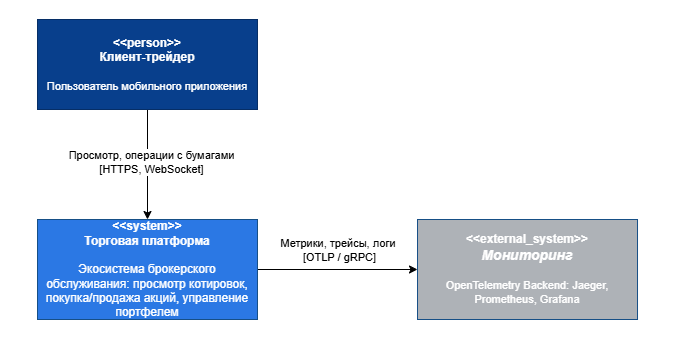
Контейнерная диаграмма раскрывает состав торговой платформы. Клиентский уровень включает нативное Android-приложение и React Native-приложение. Единой точкой входа для клиентов выступает API Gateway на Kotlin/Ktor: он принимает REST- и WebSocket-запросы, маршрутизирует их к сервисам домена и отдаёт котировки.
Backend разделён на сервисы с разной ответственностью. Auth Service отвечает за пользовательские профили, аутентификацию и сессии. Trade Service выполняет операции с ордерами, портфелем и балансами. В реализации эти доменные функции развёрнуты в контейнере Core Banking, а на C4-диаграмме показаны как отдельные логические сервисы, чтобы явно зафиксировать границу ответственности. Quotes Service на Go читает поток котировок из Linux-драйвера, записывает историю в ClickHouse и обновляет горячий кэш Redis/KeyDB. Telemetry Collector агрегирует телеметрию от сервисов и передаёт её в контур наблюдаемости.
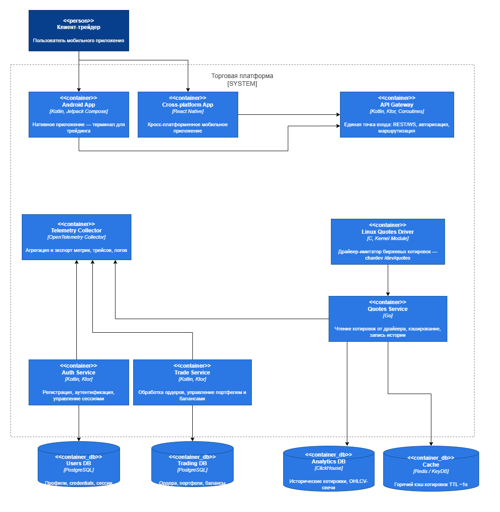
На уровне компонентов детализированы сервисы, которые несут основную архитектурную нагрузку: API Gateway, Linux Quotes Driver, Quotes Service, Auth Service и Trade Service.
API Gateway состоит из REST Controller, Auth Middleware, Service Router, Rate Limiter, WebSocket Controller и Redis Subscriber. REST Controller принимает HTTP-запросы, Auth Middleware проверяет JWT и сессии, Rate Limiter ограничивает частоту запросов на клиента. Service Router маршрутизирует операции в Auth и Trade сервисы. WebSocket Controller транслирует котировки клиентам, а Redis Subscriber подписывается на каналы котировок для push-обновлений.
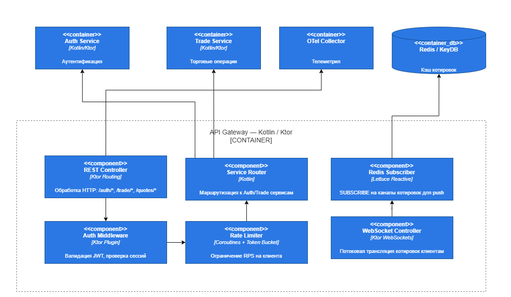
Linux Quotes Driver реализован как kernel module на C. Внутри контейнера
выделены Char Device /dev/quotes, компонент генерации котировок и кольцевой
буфер. Генератор по таймеру создаёт синтетические котировки, буфер хранит
последние значения, а character device предоставляет пользовательскому
пространству файловый интерфейс open/read/release/ioctl.
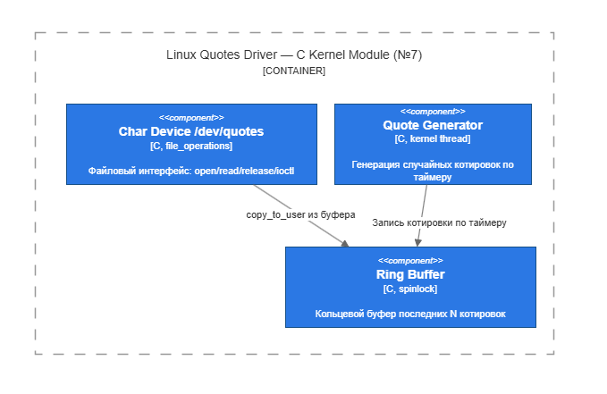
Quotes Service на Go выполняет потоковую обработку котировок. Device Reader
читает байты из /dev/quotes, Quote Parser преобразует бинарные данные в
структуру котировки, Batch Writer пакетно сохраняет историю в ClickHouse, а
Cache Writer обновляет Redis/KeyDB и публикует события по каналам котировок.
Metrics Exporter фиксирует задержки, пропускную способность и ошибки.
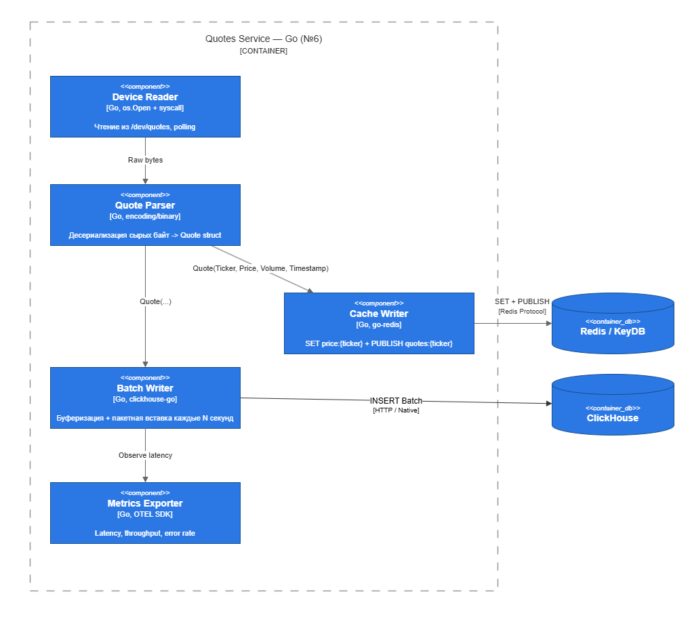
Auth Service обрабатывает регистрацию, вход, обновление токенов и управление
профилем. Auth Controller и User Controller принимают внутренние HTTP-запросы от
API Gateway. Auth Orchestrator координирует регистрацию, проверку учётных
данных, выпуск и отзыв токенов. Token Service работает с JWT, Password Hasher
отвечает за безопасное хеширование паролей, а Session Repository и User
Repository выполняют операции с таблицами sessions и users в PostgreSQL.
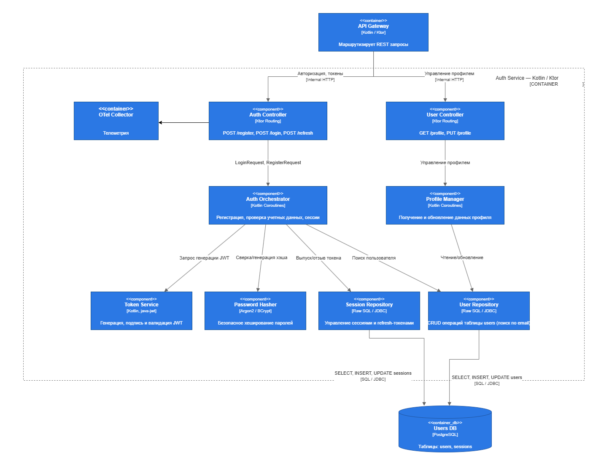
Trade Service отвечает за торговые операции и состояние портфеля. Order Controller принимает команды создания, чтения и отмены ордеров. Order Processor валидирует ордер, проверяет баланс и выполняет списание или блокировку средств. Price Checker получает актуальную цену тикера из Redis/KeyDB. Balance Manager управляет изменениями баланса, Portfolio Manager рассчитывает позиции, P&L и среднюю цену входа, а SQL Repository сохраняет ордера, портфели и балансы в PostgreSQL.
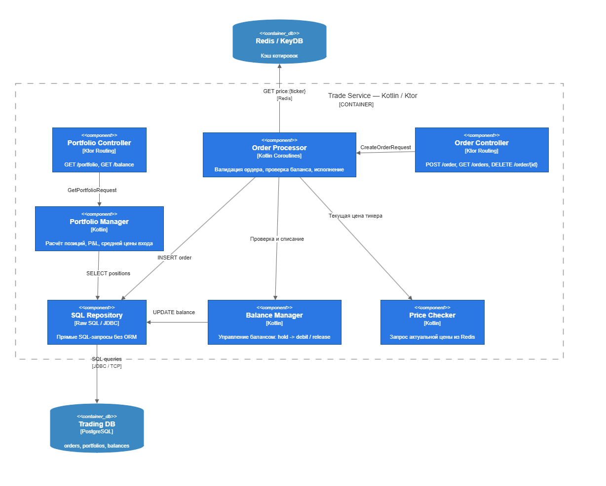
Котировки идут по контуру driver -> ingestion -> ClickHouse -> API Gateway -> mobile clients. Для ускорения выдачи текущих данных и WebSocket-уведомлений
используется Redis.
Торговые операции идут по контуру mobile client -> API Gateway -> Core Banking -> PostgreSQL. PostgreSQL выбран для пользовательских данных, потому что
балансы и портфель требуют транзакционной согласованности.
Диаграммы C4 выше фиксируют статическую структуру системы, а потоки данных показывают, как эти контейнеры взаимодействуют во время выполнения основных сценариев.
ClickHouse хранит поток котировок и историю цен. PostgreSQL хранит пользователей, счета, сделки и портфель. Redis используется как кэш и канал Pub/Sub для уведомления API Gateway о новых котировках.
| Хранилище | Назначение | Причина выбора |
|---|---|---|
| ClickHouse | история котировок | быстрые аналитические выборки по временным рядам |
| PostgreSQL | пользователи, счета, сделки | транзакции и согласованность финансовых данных |
| Redis | кэш и Pub/Sub | быстрые горячие данные и уведомления |
Генерация котировок отделена от бизнес-логики. Сервис ingestion не изменяет пользовательские данные, а Core Banking не пишет котировки. Такое разделение уменьшает связанность компонентов и упрощает проверку системы.
Backend состоит из двух развёртываемых Kotlin/Ktor-сервисов. API Gateway принимает запросы от мобильных приложений, отдаёт котировки и поддерживает WebSocket. Core Banking объединяет логические зоны Auth Service и Trade Service: обрабатывает регистрацию пользователей, пополнение учебного счёта, сделки и портфель.
Основные endpoints:
| Метод | Маршрут | Назначение |
|---|---|---|
| GET | /api/quotes |
текущие котировки |
| GET | /api/quotes/{ticker}/candles |
свечи выбранного тикера |
| WS | /ws/quotes |
realtime-обновления котировок |
| POST | /api/users |
создание пользователя |
| POST | /api/accounts/{userId}/deposit |
учебное пополнение счёта |
| POST | /api/trades |
покупка или продажа лотов |
| GET | /api/portfolio/{userId} |
портфель пользователя |
Финансовые операции выполняются в транзакции PostgreSQL. При покупке проверяется достаточность баланса, при продаже — количество доступных лотов. После проверки обновляется счёт, портфель и журнал сделок.
Драйвер Linux создаёт character device /dev/quotes и выдаёт строки с
синтетическими котировками. Go-сервис читает устройство, формирует батчи,
записывает данные в ClickHouse и публикует уведомления о новых котировках в
Redis. Для локальной разработки предусмотрен fallback-режим генерации котировок,
если драйвер недоступен.
Реализованы два клиента с одинаковым пользовательским сценарием:
Нативное приложение написано на Kotlin и Jetpack Compose. Кросс-платформенное приложение написано на React Native. Оба клиента работают с одним API, что позволяет проверять backend независимо от выбранного мобильного стека.
Система разворачивается через Docker Compose. В compose-стенд входят backend, Go ingestion, базы данных, Redis, сервис нагрузочного тестирования и компоненты наблюдаемости. Для драйвера используется отдельный compose override, так как kernel module требует доступа к ядру хоста.
В проекте реализован контур наблюдаемости на базе OpenTelemetry. Kotlin-сервисы
API Gateway и Core Banking экспортируют telemetry-данные через OTLP gRPC на порт
4317, а Go ingestion использует OTLP HTTP на порт 4318. OpenTelemetry
Collector принимает данные от сервисов, отправляет трассы в Jaeger и отдаёт
метрики через Prometheus exporter для последующей визуализации в Grafana.
Для HTTP-взаимодействия между API Gateway и Core Banking используется стандартный
W3C Trace Context: заголовок traceparent позволяет связать span-ы одного
пользовательского запроса в общую трассу. Для Redis Pub/Sub propagation не
реализован, поэтому поток go-ingestion -> Redis -> API Gateway WebSocket
отображается как несколько независимых trace-ов. Это ограничение допустимо для
учебного стенда и зафиксировано как направление дальнейшего развития.
На рисунке 8 показана трасса операции POST /api/trades в Jaeger UI. В ней
виден серверный HTTP-span Core Banking и внутренний span trade.execute,
который соответствует выполнению торговой операции и транзакционному обновлению
данных пользователя.
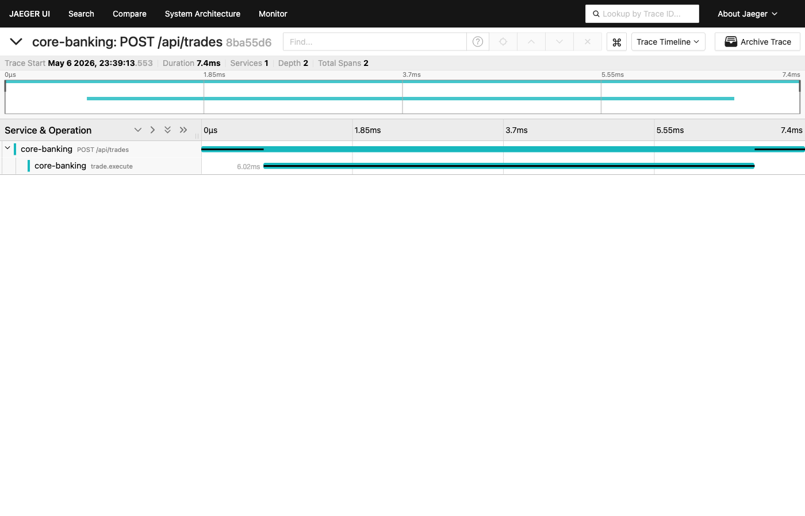
На рисунке 9 показан список trace-ов Core Banking за последние 15 минут. Такие trace-ы появляются во время smoke-проверок и нагрузочных прогонов, что подтверждает прохождение telemetry-данных через OpenTelemetry Collector в Jaeger.
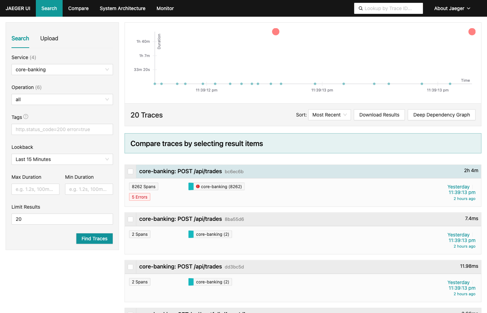
Grafana подключена к Prometheus и Jaeger через provisioning. На рисунке 10
показан дашборд HighLoad Invest - Backend Overview, используемый для контроля
runtime-метрик во время тестов: длительности торговых операций, сообщений Redis
Pub/Sub, WebSocket-рассылки и активности backend-компонентов.
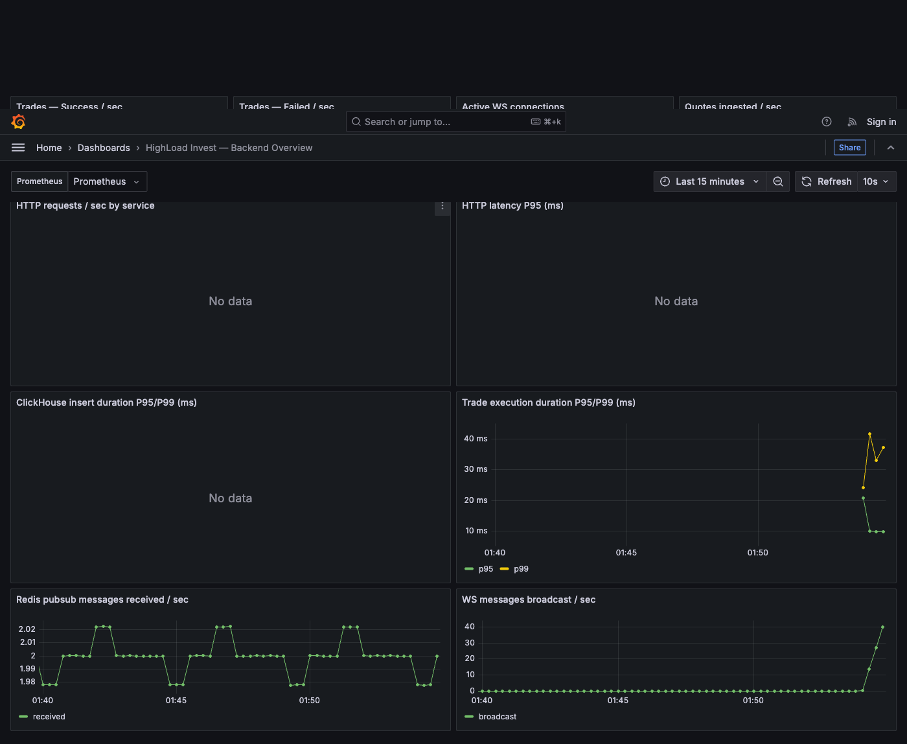
На рисунке 11 показан список автоматически подготовленных дашбордов Grafana. Наличие дашборда после запуска стенда подтверждает, что provisioning Grafana срабатывает без ручной настройки UI.
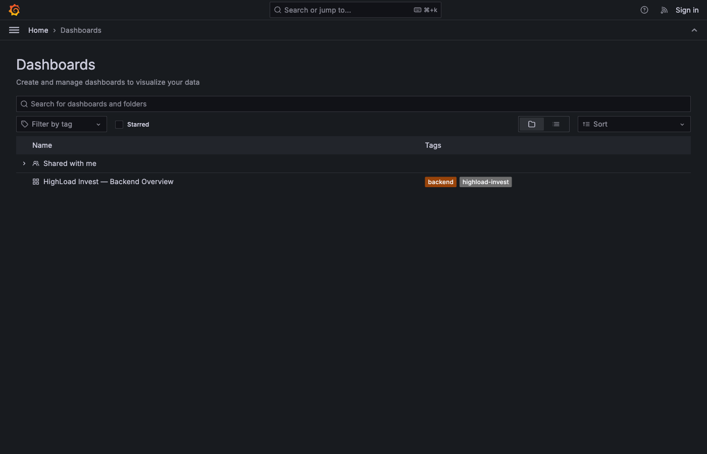
Тестирование было направлено на проверку требований из задания:
/dev/quotes;Smoke-тест проверяет минимальный пользовательский путь: создание пользователя, пополнение счёта, покупка актива и чтение портфеля. Успешный результат означает, что API Gateway, Core Banking и PostgreSQL работают согласованно.
Для проверки потока котировок контролируется три точки: наличие данных в
/dev/quotes, рост числа строк в ClickHouse и выдача актуальных котировок через
GET /api/quotes. WebSocket проверяется по факту получения клиентом сообщений
из /ws/quotes.
Нагрузочный тест выполняется сервисом-имитатором клиентов
backend/load-tester. Он создаёт логических пользователей и отправляет
REST/WebSocket-запросы к API Gateway. Параметры запуска задаются переменными
окружения: BOT_COUNT, DURATION_SEC, CREATE_PARALLELISM,
ACTIVE_REQUESTS, WS_PERCENT, REQUEST_DELAY_MIN_MS,
REQUEST_DELAY_MAX_MS.
| Сценарий | Результат |
|---|---|
| Короткая проверка REST и WebSocket | 701 успешный запрос, 0 ошибок, 220 WebSocket-сообщений |
| Проверка 10 000 логических клиентов | 3469 успешных REST-запросов, 0 ошибок |
Полученный результат подтверждает работоспособность стенда при имитации 10 000 логических клиентов. Число одновременно активных запросов ограничивается параметрами load tester, чтобы тест отражал контролируемую нагрузку, а не исчерпание ресурсов тестовой машины.
Дополнительно был выполнен каскад прогонов на staging-сервере с конфигурацией 8 vCPU, 16 GB RAM и NVMe. Нагрузка распределялась между основными сценариями: получение котировок, чтение портфеля и создание торговых операций.
| Боты | Длительность | Всего запросов | Ошибки | Error rate | RPS | Средняя задержка |
|---|---|---|---|---|---|---|
| 1 000 | 60 с | 20 110 | 0 | 0,00 % | 335 | 24 мс |
| 5 000 | 120 с | 71 544 | 28 | 0,04 % | 594 | 225 мс |
| 10 000 | 120 с | 70 723 | 18 | 0,03 % | 590 | 399 мс |
Перед основной серией запускался baseline на 100 ботах в течение 20 секунд:
2 884 запроса, 0 ошибок, средняя задержка 14 мс, 144 RPS. На максимальном
прогоне host load average составил 25,83 / 18,45 / 8,86, свободной памяти
оставалось не менее 13 GB.
| Контейнер | CPU | RAM |
|---|---|---|
| highload-clickhouse | 35,4 % | 800 MB |
| highload-jaeger | 0,02 % | 398 MB |
| highload-postgres | 0,03 % | 105 MB |
| highload-otel-collector | 0,00 % | 63 MB |
| highload-grafana | 0,04 % | 51 MB |
| highload-prometheus | 0,00 % | 23 MB |
| highload-go-ingestion | 0,27 % | 8 MB |
| highload-redis | 0,63 % | 3 MB |
Основным узким местом оказался ClickHouse: запрос актуальных котировок через
SELECT ... LIMIT 1 BY ticker создаёт заметную нагрузку при частом обращении к
/api/quotes. Для дальнейшей оптимизации можно использовать Redis-кэш с малым
TTL или materialized view в ClickHouse. PostgreSQL под торговой нагрузкой
оставался стабильным, так как операции распределялись по разным пользователям и
row-level locks не конфликтовали.
Серия прогонов подтверждает выполнение требования по имитации 10 000 клиентов: на максимальном сценарии система обрабатывала около 590 запросов в секунду, сохраняла error rate 0,03 %, а средняя задержка оставалась ниже 1 секунды.
Для ручных и автоматизированных проверок в проекте используются:
testApplication для проверки /health API Gateway;backend/bruno/highload-invest для проверки REST-сценариев
API Gateway и Core Banking;backend/scripts/smoke-traffic.sh, который выполняет короткий
пользовательский путь и создаёт данные для Grafana/Jaeger;backend/load-tester для параметризуемых нагрузочных прогонов.Для React Native выполнены установка зависимостей и TypeScript-проверка. Для нативного Android-клиента выполнена сборка debug APK в Docker-образе с Android SDK. Также собраны установочные APK для проверки на физическом Android-устройстве.
В ходе работы была разработана учебная экосистема для имитации трейдинга и инвестиций. В проект вошли два Android-клиента, Kotlin/Ktor backend, Go-сервис сбора котировок, Linux-драйвер на C, PostgreSQL, ClickHouse, Redis, контур наблюдаемости OpenTelemetry/Jaeger/Prometheus/Grafana и сервис нагрузочного тестирования.
Система покрывает основные требования практического задания: получает котировки, отдаёт их клиентам, выполняет учебные торговые операции и проверяется нагрузочным тестом с имитацией 10 000 клиентов. Все основные компоненты разворачиваются через Docker Compose.
Главный результат работы — не только готовый MVP, но и зафиксированная архитектура проекта: разделение ответственности между сервисами, отдельные хранилища для котировок и пользовательских данных, наблюдаемость runtime-сценариев и понятный контур тестирования.
Мартин Р. Чистая архитектура. — СПб.: Питер, 2018.
Брукс Ф. Мифический человеко-месяц, или Как создаются программные системы. — СПб.: Символ-Плюс, 2010.
ГОСТ 7.32-2017. Отчёт о научно-исследовательской работе. Структура и правила оформления.
Ktor Documentation. — JetBrains. URL: https://ktor.io/docs/welcome.html.
Android Developers: Jetpack Compose. — Google. URL: https://developer.android.com/jetpack/compose.
React Native Documentation. — Meta. URL: https://reactnative.dev/docs/getting-started.
ClickHouse Documentation. — ClickHouse Inc. URL: https://clickhouse.com/docs.
PostgreSQL Documentation. — PostgreSQL Global Development Group. URL: https://www.postgresql.org/docs/.
OpenTelemetry Documentation. — CNCF. URL: https://opentelemetry.io/docs/.
The Linux Kernel Module Programming Guide. URL: https://sysprog21.github.io/lkmpg/.
Jaeger Documentation. — CNCF. URL: https://www.jaegertracing.io/docs/.
Prometheus Documentation. URL: https://prometheus.io/docs/.
Grafana Documentation. URL: https://grafana.com/docs/.
Современная индустрия разработки программного обеспечения, ведомая потребностями финтеха и монетизацией, породила целую армию специалистов, обученных решать шаблонные задачи в узком технологическом стеке. Как справедливо отмечает статистика, подавляющее большинство выпускников не обладает понятийным мышлением, что приводит к функциональной неграмотности: разработчик превращается в человека с молотком, для которого весь мир — гвозди. Чтобы выйти из этой парадигмы, необходимо прекратить рассматривать языки программирования как самоцель и начать воспринимать их через призму кибернетики, моделей вычислений (по Глушкову и Маркову) и глубины семантической пропасти между человеком и исполнителем.
Если отбросить синтаксический «мусор», любой язык программирования — это лишь инструмент для формализации сумбурной идеи в план работ для конкретного исполнителя. Разница между JS, Kotlin, Go и C заключается исключительно в толщине прослойки, модели вычислений и ширине семантической пропасти.
Исходя из фундаментальных основ программирования, где программа — это вычислительный процесс, преобразующий информацию (по Глушкову), мы должны признать страшную для многих фронтендеров правду.
HTML не является языком программирования. В нем нет алгоритма, нет описания порядка действий исполнителя. HTML — это формализованный словарь, статический набор символов абстрактного алфавита. Это декларативное описание желаемого состояния (структуры), а не процесса. С точки зрения семиотики, HTML передает семантику (смысл элементов — заголовок, абзац), но лишен вычислительной прагматики.
Браузер — это гигантский Исполнитель-Костыль. Если при написании кода на Си программист сам формирует вычислительный процесс, то в случае с веб-разработкой вычислительный процесс уже написан создателями браузера. Браузер — это невероятно сложная, тяжеловесная виртуальная машина (прослойка), которая берет на вход примитивный текст (HTML) и самостоятельно решает, как именно задействовать ресурсы CPU/GPU для превращения этого текста в пиксели на экране.
По сути, HTML и браузер — это идеальная система для эпохи функциональной неграмотности. Она создана для того, чтобы максимально изолировать человека от необходимости понимать, как устроен мир вычислительной техники. Разработчику не нужно думать об архитектуре, выделении памяти или рендеринге графов — достаточно просто "накидать тегов", а всю интеллектуальную и алгоритмическую работу сделает Исполнитель (браузер).
Вывод: Современный стек (JS + HTML + Браузер или Kotlin + JVM) — это результат естественного отбора в IT-эволюции, где победила не инженерная элегантность, а способность бизнеса быстро утилизировать труд массово подготовленных «специалистов». Понимание того, что именно исполняет ваш код и какая под ним лежит модель вычисления — это та граница, которая отделяет ремесленника-кодера от настоящего инженера, обладающего понятийным мышлением.